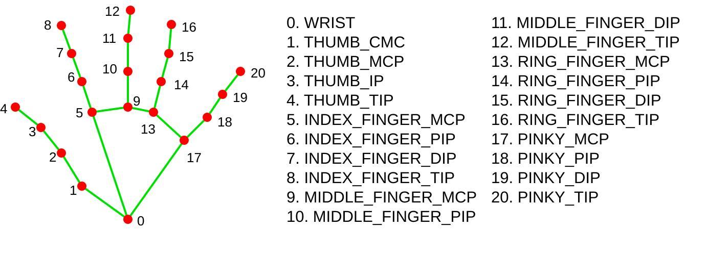
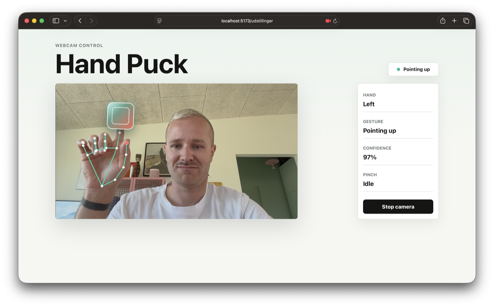
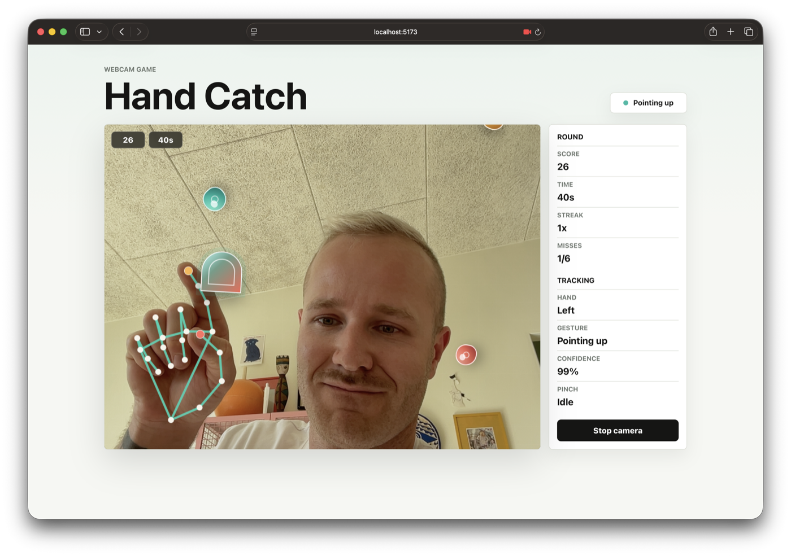
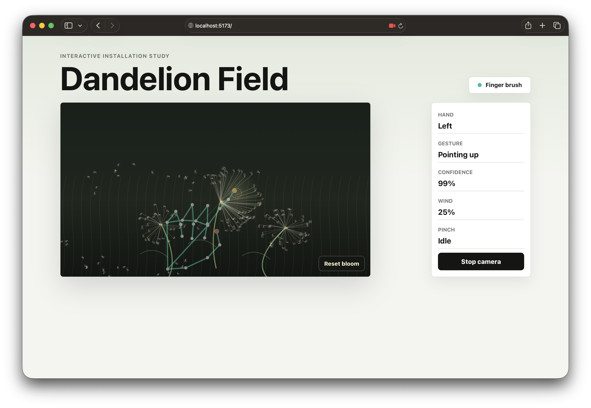

RACE - Gesture & Motion Design
Short wrap-up for Hand Puck, Hand Catch, Air Juggler and related experiments.
Core idea
The webcam is only input after we interpret it.
The camera gives us images. The model gives us hand points. The interaction design decides what those points should mean.
Mental model
Browser webcam stream, usually through localhost and a permission prompt.
MediaPipe finds points such as wrist, thumb tip and index fingertip.
Rules interpret landmarks as values like pinch, grip, open hand or hand position.
React or game logic turns values into score, targets, balls, force or UI state.
The screen shows what the system understood, and what changed because of it.
Interpretation
The webcam gives us video frames. It does not know what a hand, gesture or game action is.
MediaPipe interprets the image enough to say: these pixels look like a hand with landmarks.
Our gesture logic turns tracked points into interaction states the prototype can act on.
Interpretation happens when tracked points become meaningful interaction states.
What MediaPipe gives you

The gesture playground
src/gestures.jsgetHandGestureTurns hand landmarks into understandable values: grip, pinch, open hand, pointing up, rotation.
movePuckWithGestureMaps index fingertip position to CSS variables so a puck can follow the hand.
Shows whether the system detected the hand and which gesture it thinks is active.
A good first change is one small threshold or one visual reaction, then test.
Exercise 1

Exercise 2
useCatchGame.js.
Hand Catch flow
--x and --y.Advanced path
The implementation guide adds one layer at a time, so students can see where each concept enters.
movePuckWithGesture returns { x, y } so physics can use the puck.
The ball only gets hit when the player pinches near it, so gesture state matters.
This is the shift from moving an interface element to controlling a real-time system.
Showcase
@tensorflow-models/hand-pose-detection.handTracking.js: detector and palm positions.game.js: physics, collisions, score, rendering.useHandTracking.js: connects camera, model and game loop.Same pipeline, different meaning

Debugging
gestures.js.
Design questions
Does the gesture work under normal lighting, distance and movement speed?
Can the user see what the system recognized and what changed because of it?
Can the prototype still be tested with pointer or keyboard input when tracking fails?
Use it in the exam project
Next step
Adjust one threshold, gravity value, speed, score rule or force value.
Add clearer visible feedback for recognition, hit, miss, pinch or open hand.
Write what worked, what was unstable and what you would test next.
Keep the experiment small enough that you understand what changed.